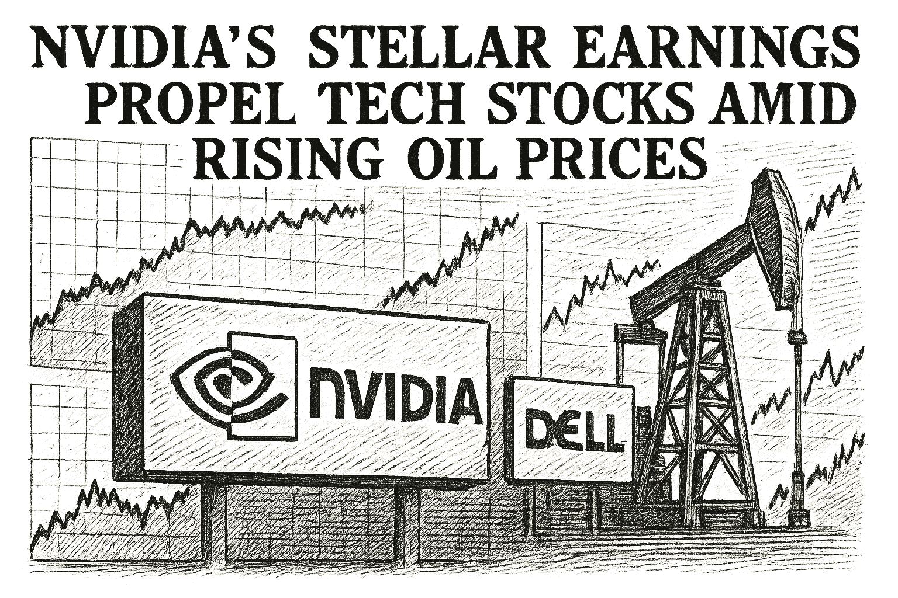

SPY
Current: $757.20Change: -7.96 (-1.04%)
Updated:
Source: yahoo_chartFreshness: fresh


What do massive earnings beats from Broadcom, Credo Technology Group, and Snowflake really tell us about the current state of the AI trade? During a recent episode of The AI Investor Podcast, Eric Bleeker and Austin Smith discussed why stocks like Credo and Broadcom faced brutal pullbacks despite stellar numbers, while Snowflake surged on accelerated cloud and consumption growth. The two also examined forward price-to-earnings multiples, hardware versus software margins, peak earnings anxieties, and why the market is treating today's tech boom differently than past megatrends like the smartphone surge.

Today's Headline: Nvidia Earnings Put Narrow Robotics Rally to the Test
Setup: What do massive earnings beats from Broadcom, Credo Technology Group, and Snowflake really tell us about the current state of the AI trade? During a recent episode of The AI Investor Podcast, Eric Bleeker and Austin Smith discussed why stocks like Credo and Broadcom faced brutal pullbacks despite stellar numbers, while Snowflake surged on accelerated cloud and consumption growth. The two also examined forward price-to-earnings multiples, hardware versus software margins, peak earnings anxieties, and why the market is treating today's tech boom differently than past megatrends like the smartphone surge.
Today's Market Weather: High - Deterministic market-risk score 70/100 reflects volatility normal, risk appetite weak, breadth health broad weakness, sentiment neutral, regime defensive rotation.
Why it matters: Joshua can distinguish verified facts from delayed values and open gaps while the active WOPR condition remains Collecting samples.
What Joshua should watch: DELL remains the leading internal review target; its evidence stack now separates candidate confidence from portfolio risk.
What changed since yesterday: 127 canonical metric change(s) are available; Sentinel is ONLINE; market is OPEN.
Why This Matters: Nvidia Earnings Put Narrow Robotics Rally to the Test is the clearest current evidence-led frame for Joshua's observation-only review; missing facts remain explicit intelligence gaps.

- What happened overnight: Canonical cross-asset moves collected; no causal narrative is assigned without a sourced event.
- What changed materially: 8 core instrument(s) exceeded the configured material-move threshold.
- Market risk: elevated (70).
- Macro regime: defensive_rotation with confidence 0.74.
- Important canonical events: 25 deduplicated event(s) passed materiality and freshness checks.
- Why markets moved: VIX moved alongside India hosts BRICS summit as Iran war tests bloc unity - Reuters.
- Critical collection gaps: 0.
Why This Matters: Joshua can use verified cross-asset moves and deterministic risk context while keeping causation explicitly unresolved.
FDX Earnings Expectations — 2026-09-16, Time Unavailable
Consensus EPS: $4.05
Year-ago EPS: unavailable
Expected EPS growth: unavailable
Consensus revenue: $22.6B
Year-ago revenue: unavailable
Expected revenue growth: unavailable
Source: finnhub_earnings_calendar · As of: 2026-09-10T14:06:32.499833+00:00 · Freshness: current

- WOPR learning pipeline: Collecting samples
- Candidates evaluated 24h: 0
- Current gate: Evidence
- Notification ledger events in 24h: 18
- Pending orders created/canceled/filled/expired: 4/3/0/1
- Pending lifecycle interpretation: Pending-order cancellations have trackable reasons and no obvious rapid churn pattern.
- Portfolio risk: Label: High / Score: 100.0
- Latest intelligence gap report: intelligence_gap_report_2026-09-06.pdf
Why This Matters: The active gate is Evidence, so the key question is why candidates are stopping before approval, not how to force trades.

- Sentinel role: infrastructure and operational status only.
- State: ONLINE
- Last successful validation: 2026-09-10T14:11:36.589243+00:00
- Payloads accepted/rejected: 18383/0
- Node health score: 100
Why This Matters: Sentinel is ONLINE, so Joshua should use its context only to the extent the latest accepted pulse is fresh and authenticated.

CANDIDATES MOVING THROUGH JOSHUA'S INVESTMENT-REVIEW WORKFLOW
FROZEN DAILY BRIEF SNAPSHOT | 2026-09-10T14:10:57.278781+00:00
QUEUE SUMMARY | Investment Ready: 0 | Waiting for Price: 0 | Waiting for Evidence: 2 | Research Underway: 4 | Governance Hold: 2 | Monitor Only: 0
Investment-ready status: No candidates are currently Investment Ready.
#5 NVDA - Waiting for Evidence [Moved Down 4->5]
Joshua's Thesis: Positive thesis not yet established.
Why Waiting: Positioning gate failed.
Price: 218.14 now; 218.16 preferred entry
What Unlocks It: Clear valuation support; Evidence that the business quality matches the risk being taken; Independent evidence streams pointing the same way
Portfolio Fit: 17.5/100 — VERY LOW ↓
Portfolio Fit Drivers: projected Technology exposure 57.5%; projected AI infrastructure exposure 57.5%; candidate amount $100 vs $74 currently allocated
Candidate Risk: 74.5/100 — HIGH ↑
Risk Drivers: projected Technology exposure 57.5%; projected AI infrastructure exposure 57.5%; candidate amount $100 vs $74 currently allocated
Next: Positioning status must no longer be warning. Owner: Joshua.
#8 AVGO - Research Underway [Moved Down 5->8]
Joshua's Thesis: Positive thesis not yet established.
Why Waiting: Research evidence is still being gathered.
Price: 363.26 now; 370.11 preferred entry
What Unlocks It: Clear valuation support; Evidence that the business quality matches the risk being taken; Independent evidence streams pointing the same way
Portfolio Fit: 17.5/100 — VERY LOW ↓
Portfolio Fit Drivers: projected Technology exposure 57.5%; projected AI infrastructure exposure 57.5%; candidate amount $100 vs $74 currently allocated
Candidate Risk: 74.5/100 — HIGH ↑
Risk Drivers: projected Technology exposure 57.5%; projected AI infrastructure exposure 57.5%; candidate amount $100 vs $74 currently allocated
Next: Fill before expires_at while entry conditions remain valid. Owner: Columbo.
#11 QBTS - Waiting for Evidence [Moved Up 15->11]
Joshua's Thesis: Positive thesis not yet established.
Why Waiting: Waiting for the preferred entry price.
Price: 16.82 now; 20.10 preferred entry
What Unlocks It: Clear valuation support; Evidence that the business quality matches the risk being taken; Independent evidence streams pointing the same way
Portfolio Fit: 0.0/100 — VERY LOW ↓
Portfolio Fit Drivers: projected Unclassified exposure 71.5%; projected Unclassified exposure 71.5%; candidate amount $100 vs $74 currently allocated
Candidate Risk: 100.0/100 — VERY HIGH ↑
Risk Drivers: projected Unclassified exposure 71.5%; projected Unclassified exposure 71.5%; candidate amount $100 vs $74 currently allocated
Next: Fill before expires_at while entry conditions remain valid. Owner: Joshua.
#16 PLTR - Governance Hold [Moved Down 10->16]
Joshua's Thesis: Positive thesis not yet established.
Why Waiting: Governance gate has not cleared.
Price: 167.57 now; 167.12 preferred entry
What Unlocks It: Governance gate clears; Clear valuation support; Evidence that the business quality matches the risk being taken
Portfolio Fit: 17.5/100 — VERY LOW ↓
Portfolio Fit Drivers: projected Technology exposure 57.5%; projected AI software exposure 57.5%; candidate amount $100 vs $74 currently allocated
Candidate Risk: 74.5/100 — HIGH ↑
Risk Drivers: projected Technology exposure 57.5%; projected AI software exposure 57.5%; candidate amount $100 vs $74 currently allocated
Next: Re-evaluate after the recorded gate clears. Owner: Columbo.
#19 ANGX - Governance Hold [Moved Up 21->19]
Joshua's Thesis: Positive thesis not yet established.
Why Waiting: Governance gate has not cleared.
Price: 5.14 now; 4.56 preferred entry
What Unlocks It: Governance gate clears; Clear valuation support; Evidence that the business quality matches the risk being taken
Portfolio Fit: 0.0/100 — VERY LOW ↓
Portfolio Fit Drivers: projected Unclassified exposure 71.5%; projected Unclassified exposure 71.5%; candidate amount $100 vs $74 currently allocated
Candidate Risk: 100.0/100 — VERY HIGH ↑
Risk Drivers: projected Unclassified exposure 71.5%; projected Unclassified exposure 71.5%; candidate amount $100 vs $74 currently allocated
Next: Re-evaluate after the recorded gate clears. Owner: Advisory Committee.
#20 DIA - Research Underway [Moved Down 12->20]
Joshua's Thesis: Positive thesis not yet established.
Why Waiting: Research evidence is still being gathered.
Price: Current price unavailable.; Preferred entry not established.
What Unlocks It: Clear valuation support; Evidence that the business quality matches the risk being taken; Independent evidence streams pointing the same way
Portfolio Fit: 17.5/100 — VERY LOW ↓
Portfolio Fit Drivers: projected ETF exposure 57.5%; projected Broad market exposure 57.5%; candidate amount $100 vs $74 currently allocated
Candidate Risk: 74.5/100 — HIGH ↑
Risk Drivers: projected ETF exposure 57.5%; projected Broad market exposure 57.5%; candidate amount $100 vs $74 currently allocated
Next: Clear valuation support; Evidence that the business quality matches the risk being taken; Independent evidence streams pointing the same way. Owner: Columbo.
#22 SPCX - Research Underway [NEW]
Joshua's Thesis: Positive thesis not yet established.
Why Waiting: Research evidence is still being gathered.
Price: 150.13 now; 144.18 preferred entry
What Unlocks It: Clear valuation support; Evidence that the business quality matches the risk being taken; Independent evidence streams pointing the same way
Portfolio Fit: 0.0/100 — VERY LOW
Portfolio Fit Drivers: projected Unclassified exposure 71.5%; projected Unclassified exposure 71.5%; candidate amount $100 vs $74 currently allocated
Candidate Risk: 100.0/100 — VERY HIGH
Risk Drivers: projected Unclassified exposure 71.5%; projected Unclassified exposure 71.5%; candidate amount $100 vs $74 currently allocated
Next: Fill before expires_at while entry conditions remain valid. Owner: Columbo.
#25 XRAY - Research Underway
Joshua's Thesis: Positive thesis not yet established.
Why Waiting: Research evidence is still being gathered.
Price: 10.52 now; Preferred entry not established.
What Unlocks It: Clear valuation support; Evidence that the business quality matches the risk being taken; Independent evidence streams pointing the same way
Portfolio Fit: 0.0/100 — VERY LOW ↓
Portfolio Fit Drivers: projected Unclassified exposure 71.5%; projected Unclassified exposure 71.5%; candidate amount $100 vs $74 currently allocated
Candidate Risk: 100.0/100 — VERY HIGH ↑
Risk Drivers: projected Unclassified exposure 71.5%; projected Unclassified exposure 71.5%; candidate amount $100 vs $74 currently allocated
Next: Clear valuation support; Evidence that the business quality matches the risk being taken; Independent evidence streams pointing the same way. Owner: Columbo.
Since the prior Chronicle: UUUU - Removed
Observation only. This section creates no recommendation, order, authority, or execution instruction.

- If NVDA reaches the recorded price condition <= 218.16, which recorded evidence and governance requirements would still remain?
- If AVGO reaches the recorded price condition <= 370.11, which recorded evidence and governance requirements would still remain?
- If QBTS reaches the recorded price condition <= 20.1, which recorded evidence and governance requirements would still remain?
- Which recorded governance requirement must clear before PLTR can advance?
- What FDX EPS or revenue result would materially change the current recorded thesis?

Generated from available local WOPR/Joshua/Sentinel observations. Missing sources are labeled unknown.
So what: Joshua has internal observations, but the editorial desk lacks live external context. The correct action is investigation, not confidence inflation.
Internal read: WOPR learning is Collecting samples, pending lifecycle interpretation is Pending-order cancellations have trackable reasons and no obvious rapid churn pattern., portfolio risk is Label: High / Score: 100.0, and best opportunity is DELL.
Missing link: ChatGPT Live should connect those internal facts to external macro, volatility, sector, and headline conditions before Joshua treats the brief as a morning newspaper.
Why This Matters: Editorial analysis should sharpen Joshua's questions without pretending unavailable market facts are known.

Compared to: 2026-09-09
- Market weather: Elevated -> High
- Top opportunity: Still DELL
- Joshua gate: Still Evidence
- 2Y Treasury.last_price: 4.43 -> 4.43 (unchanged); 2Y Treasury.last_price changed 0.00% versus the prior frozen Chronicle snapshot.
- 2Y Treasury.percent_change: 0.9111617312072902 -> 0.9111617312072902 (unchanged); 2Y Treasury.percent_change changed 0.00% versus the prior frozen Chronicle snapshot.
- 10Y Treasury.last_price: 4.83 -> 4.83 (unchanged); 10Y Treasury.last_price changed 0.00% versus the prior frozen Chronicle snapshot.
- 10Y Treasury.percent_change: 0.6250000000000052 -> 0.6250000000000052 (unchanged); 10Y Treasury.percent_change changed 0.00% versus the prior frozen Chronicle snapshot.
- 30Y Treasury.last_price: 5.28 -> 5.28 (unchanged); 30Y Treasury.last_price changed 0.00% versus the prior frozen Chronicle snapshot.
- 30Y Treasury.percent_change: 0.5714285714285762 -> 0.5714285714285762 (unchanged); 30Y Treasury.percent_change changed 0.00% versus the prior frozen Chronicle snapshot.
- SPY.last_price: 758.77 -> 757.2 (down); SPY.last_price changed 0.21% versus the prior frozen Chronicle snapshot.
- SPY.percent_change: -0.8351194521407269 -> -1.0403052956244345 (down); SPY.percent_change changed 24.57% versus the prior frozen Chronicle snapshot.
- QQQ.last_price: 710.15 -> 708.81 (down); QQQ.last_price changed 0.19% versus the prior frozen Chronicle snapshot.
- QQQ.percent_change: 0.1283063560994823 -> -0.06062827815690932 (down); QQQ.percent_change changed 147.25% versus the prior frozen Chronicle snapshot.
- IWM.last_price: 288.64 -> 287.83 (down); IWM.last_price changed 0.28% versus the prior frozen Chronicle snapshot.
- IWM.percent_change: -1.8264684874664143 -> -2.1019693207714045 (down); IWM.percent_change changed 15.08% versus the prior frozen Chronicle snapshot.

Joshua did not materially change its top opportunity: DELL remains first. The useful question is whether confidence improved, deteriorated, or merely stayed unproven.
- Unknown: Nvidia's Earnings; why it matters: Strong earnings could signal a recovery in tech stocks. - Current observations are not sufficient to confirm or retire this warning.
- Unknown: Oil Price Movements; why it matters: Rising oil prices can impact inflation and economic growth forecasts. - Current observations are not sufficient to confirm or retire this warning.
- Unknown: Geopolitical Developments - Current observations are not sufficient to confirm or retire this warning.
Portfolio Construction Review
Current allocation: 73.86 allocated.
Largest sector: Industrials at 67.1%.
Largest theme: Economic cycle at 67.1%.
Diversification: Concentrated (32.9).
Cash allocation: 92.6% unallocated.
Recommended exposure: DELL at portfolio-fit score 17.5.
Portfolio fit: DELL has strong standalone evidence, but it increases portfolio concentration.
Why This Matters: Portfolio Manager evaluates whether an opportunity improves this portfolio; it does not select the investment, vote, or authorize execution.

Today, the evidence gate matters more than the ticker list; Evidence is where Joshua's attention belongs.

| Can trigger trade | no |
| Can modify trade rules | no |
| Can add watch items | yes |
| Can add review questions | yes |
| Can adjust confidence notes | yes |
| Input policy | external_intelligence_plus_sanitized_internal_observations |
| External policy | The Editor-in-Chief synthesizes current world/market context where available and labels unknowns; provider/model provenance remains separate. |
| Internal policy | Joshua/WOPR/Sentinel facts are supplied as sanitized observation-only summaries. |
| Editorial model | ChatGPTEditorialProvider |
- Selected by a deterministic daily rotation through symbols already present in the persisted Chronicle snapshot.
- Related event on the canonical wire: Prediction: Micron's Sept. 30 Earnings Could Be the Most Important Catalyst for AI Memory Stocks This Year
- 'Saved the day': How China helped keep the lid on oil price surge as Iran war disrupted supplies
- Desk: commodity; source: CNBC; linked symbols: none recorded.
- Published: 9/9/26 23:23 MST.
- High-impact watch: Advance Monthly Sales for Retail and Food Services - 9/16/26 05:30 MST.
- Affected assets: US equities, Treasuries, USD; source: census_release_schedule.
- FDX earnings: September 16, 2026, time unknown.
- Technology: 0.94% session performance; source: persisted sector ledger.
- Utilities: 0.46% session performance; source: persisted sector ledger.
- Energy: -0.32% session performance; source: persisted sector ledger.
- RUSSELL FUTURES: -2.67% recorded move; price: 2897.0.
- Session: open; catalyst status: possible; source: yahoo_chart.
- Pending order lifecycle - why it matters: Pending-order cancellations have trackable reasons and no obvious rapid churn pattern.; would change Joshua's view: canceled-order regret analysis shows protection or avoidable missed gains.
- State: broad_weakness; score: 21.80/100; advance/decline ratio: 0.20.
- Above 50-day average: 39.50%; sample: 119; provider: sentinel_sampled_breadth.
- Decision outcomes evaluated: 16; currently untestable: 0.
- Warning review: unknown 3; confidence calibration: insufficient_sample.
- Current macro regime: defensive_rotation; change probability: unavailable.
- Risk dashboard: elevated (70/100); breadth: broad_weakness; sentiment: neutral.
- Scenario board only - a current-state observation, not a forecast or execution instruction.

- Hosts Making Money with Charles Payne and founded Wall Street Strategies to provide market research for individual investors.
- Published quotation: "The stock market is the greatest wealth-creation machine in history."
- Published framework: Look for leadership, improving fundamentals, innovation, and market participation while encouraging individuals to build knowledge, accept responsibility, and engage with long-term wealth creation.
- Committee lens: Payne contributes a growth-leadership and individual-opportunity lens, asking whether improving fundamentals and market recognition support the upside case.
- Public philosophy profile only; no participation, endorsement, or current recommendation is implied.
- What FDX EPS or revenue result would materially change the current recorded thesis?
- DELL: No canonical symbol-specific material event is linked.
- Attach the missing DELL evidence before the next committee review.
- Define evidence that would confirm or retire each unresolved warning before the next review window.
- If NVDA reaches the recorded price condition <= 218.16, which recorded evidence and governance requirements would still remain?
- If AVGO reaches the recorded price condition <= 370.11, which recorded evidence and governance requirements would still remain?
- If QBTS reaches the recorded price condition <= 20.1, which recorded evidence and governance requirements would still remain?
- Which recorded governance requirement must clear before PLTR can advance?
- Evidence agenda: DELL - No canonical symbol-specific material event is linked.
- Proposed review: Sentinel infrastructure state ONLINE - why it matters: operational freshness affects how much Joshua can trust external/context observations; would change Joshua's view: fresh validated Sentinel status returns before the market session.
- Proposed review: WOPR pipeline Collecting samples - why it matters: the active gate shows whether today's constraint is opportunity count, evidence quality, or calibration; would change Joshua's view: candidates begin clearing the current gate with stronger evidence.
- Canonical instruments reviewed: 24; delayed 6, fresh 18.
- Leading sources: yahoo_chart (21), treasury_official_yield_curve (3).
- Snapshot recorded: 9/10/26 07:06 MST.
Nvidia Earnings Put Narrow Robotics Rally to the Test
Storm meter: High
#5 NVDA - Waiting for Evidence [Moved Down 4->5]
Observation mode: observation_only
Watch: Pending order lifecycle - why it matters: Pending-order cancellations have trackable reasons and no obvious rapid churn pattern.; would change Joshua's view: canceled-order regret analysis shows protection or avoidable missed gains.
Question: If NVDA reaches the recorded price condition <= 218.16, which recorded evidence and governance requirements would still remain?